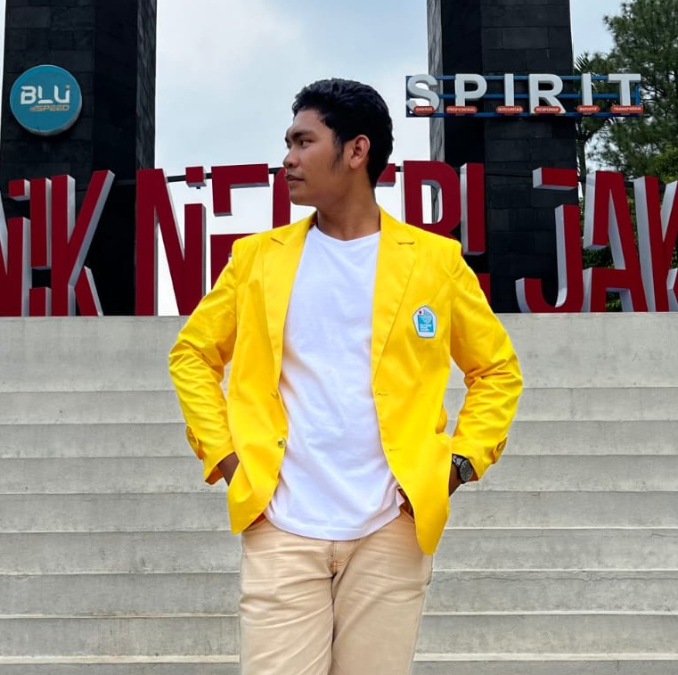

Halo, saya Naqib Zuhair Al-Hudri
Saya adalah Mahasiswa Teknik Informatika dan Komputer di Politeknik Negeri Jakarta
Selamat datang di website saya, dan website ini dibuat untuk memenuhi tugas besar 1 (UTS)
Mata Kuliah Pemrograman Web Dasar


Saya adalah Mahasiswa Teknik Informatika dan Komputer di Politeknik Negeri Jakarta
Selamat datang di website saya, dan website ini dibuat untuk memenuhi tugas besar 1 (UTS)
Mata Kuliah Pemrograman Web Dasar
|  |
Sebelumnya, perkenalan diri dulu yuk!
|
Nama saya Naqib Zuhair Al-Hudri, sering dipanggil Naqib. Hanya seorang yang sederhana dengan usia yang sudah menyentuh kepala dua. dibesarkan dari keluarga yang tercukupi, dan tumbuh menjadi seseorang yang mandiri. Dalam Kehidupan ini, saya merasa banyak belajar hal baru.
Saya adalah orang yang bisa dibilang introvert, tapi bisa juga dibilang ekstrovert. Terkadang merasa lebih nyaman sendiri, dan terkadang merasa nyaman di tengah keramaian dan merasa suntuk jika tidak bersosialisasi. Saya suka menghabiskan waktu dengan teman-teman, tetapi juga menghargai waktu sendiri untuk merenung dan berpikir.
Seringkali saya berpkir bahwa hidup ini adalah sebuah perjalanan yang penuh dengan pelajaran. Dari setiap perjalanan yang dilewati, banyak hal yang bisa diambil pelajaran dan pengalamannya. Saya percaya bahwa setiap orang yang kita temui, setiap pengalaman yang kita alami, adalah bagian dari proses pembelajaran yang membentuk diri kita menjadi lebih baik.
Dan saya adalah orang yang sangat menghargai setiap proses yang kita alami. Saya percaya bahwa setiap langkah yang kita ambil, baik itu langkah kecil atau besar, adalah bagian dari perjalanan hidup kita yang berharga. Maka itu saya tidak pernah sedikitpun menyepelekan setiap proses dan pencapaian setiap orang, khususnya diri saya.
Tumbuh dan berkembang adalah hal yang sangat saya inginkan saat ini, untuk diri saya pribadi. Saya ingin menjadi pribadi yang lebih baik, lebih bijaksana, dan lebih berpengalaman. Saya percaya bahwa dengan terus belajar dan berusaha, saya bisa mencapai tujuan hidup saya dan memberikan dampak positif bagi orang-orang di sekitar saya.
Saya memiliki satu kutipan yang terus memotivasi hidup saya saat ini, dan kedepannya, yaitu:
"إِذَا صَدَقَ العَظْمُ وَضَحَ السَبِيْلُ"
"Jika ada Keinginan yang kuat, maka jalan akan terbuka"

SDN Pinang Ranti 04 Pagi
2011-2017

MTs Daarul Uluum Lido Bogor
2017-2020
MA Daarul Uluum Lido Bogor
2020-2023

D4 Teknik Informatika
2024-Sekarang